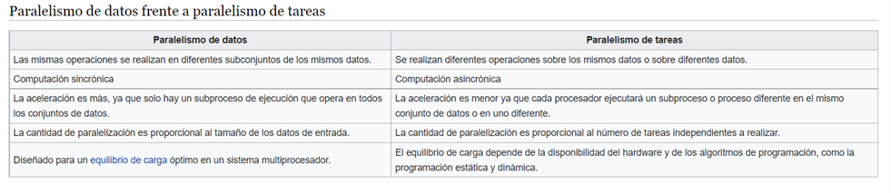

Paralelismo a nivel de instrucción
Un programa de ordenador es, en esencia, una secuencia de instrucciones ejecutadas
por un procesador. Estas instrucciones pueden reordenarse y combinarse en grupos que
luego son ejecutadas en paralelo sin cambiar el resultado del programa. Esto se conoce
como paralelismo a nivel de instrucción. Los avances en el paralelismo a nivel
de instrucción dominaron la arquitectura de computadores desde mediados de 1980
hasta mediados de la década de 1990.
Los procesadores modernos tienen ''pipeline'' de instrucciones de varias etapas. Cada etapa en
el pipeline corresponde a una acción diferente que el procesador realiza en la
instrucción correspondiente a la etapa; un procesador con un pipelinede N etapas
puede tener hasta n instrucciones diferentes en diferentes etapas de finalización.
El ejemplo canónico de un procesador segmentado es un procesador RISC, con cinco etapas:
pedir instrucción, decodificar, ejecutar, acceso a la memoria y escritura. El
procesador Pentium 4 tenía un pipeline de 35 etapas.
Además del paralelismo a nivel de instrucción del pipelining, algunos procesadores
pueden ejecutar más de una instrucción a la vez. Estos son conocidos como
procesadores superescalares. Las instrucciones pueden agruparse juntas sólo si no hay
dependencia de datos entre ellas. El scoreboarding y el algoritmo de Tomasulo —que es
similar a scoreboarding pero hace uso del renombre de registros— son dos de las
técnicas más comunes para implementar la ejecución fuera de orden y
la paralelización a nivel de instrucción.
Un pipeline canónico de cinco etapas en una máquina RISC (IF = Pedido de
Instrucción, ID = Decodificación de instrucción, EX = Ejecutar, MEM =
Acceso a la memoria, WB = Escritura).
Paralelismo de datos
El paralelismo de datos es el paralelismo inherente en programas con ciclos, que se
centra en la distribución de los datos entre los diferentes nodos computacionales
que deben tratarse en paralelo. La paralelización de ciclos conduce a menudo a
secuencias similares de operaciones —no necesariamente idénticas— o funciones que
se realizan en los elementos de una gran estructura de datos. Muchas de las aplicaciones
científicas y de ingeniería muestran paralelismo de datos.
Una dependencia de terminación de ciclo es la dependencia de una iteración de
un ciclo en la salida de una o más iteraciones anteriores. Las dependencias de
terminación de ciclo evitan la paralelización de ciclos.
Un procesador superescalar con pipeline de cinco etapas, capaz de ejecutar dos instrucciones
por ciclo. Puede tener dos instrucciones en cada etapa del pipeline, para un total de hasta
10 instrucciones (se muestra en verde) ejecutadas simultáneamente.
Paralelismo de tareas
El paralelismo de tareas es la característica de un programa paralelo en la
que cálculos completamente diferentes se pueden realizar en cualquier conjunto
igual o diferente de datos. Esto contrasta con el paralelismo de datos, donde se realiza
el mismo cálculo en distintos o mismos grupos de datos. El paralelismo de tareas
por lo general no escala con el tamaño de un problema.
